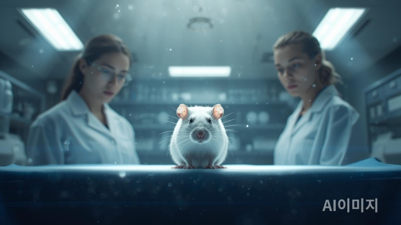

죽을 때까지 '쾌락 버튼'만 누른 쥐의 비극

1954년, 뇌과학 역사를 뒤흔든 기막힌 사고가 발생합니다. 캐나다 맥길 대학교의 제임스 올즈와 피터 밀너는 원래 쥐의 뇌에서 '각성'을 담당하는 부위를 찾고 있었습니다. 하지만 실험 도중 전극이 실수로 목표 지점이 아닌 '중격(Septal area)' 부위에 꽂히게 됩니다. 이 작은 실수가 인류가 중독의 본질을 깨닫게 된 결정적 계기가 되었습니다.
1. 우연이 발견한 '욕망의 센터'
전극이 빗나간 그 쥐는 이상한 행동을 보였습니다. 전기 자극을 받은 장소로 자꾸만 돌아오려 했던 것이죠. 연구진은 쥐가 스스로 전기 자극을 줄 수 있도록 상자 안에 '레버'를 설치했습니다. 그러자 경악스러운 일이 벌어졌습니다.
생존 본능을 압도한 쾌락
실험실의 쥐는 시간당 무려 7,000번이나 레버를 눌렀습니다. 1초에 약 2번 꼴입니다. 연구진은 쥐에게 선택지를 주었습니다. 한쪽에는 신선한 음식과 물, 그리고 매력적인 짝짓기 대상을 두었고, 다른 한쪽에는 오직 전극 레버만 두었습니다. 결과는 참혹했습니다.
쥐는 굶주림과 갈증을 전혀 느끼지 못하는 것처럼 행동했습니다. 심지어 레버로 가는 길목에 강력한 전기 충격이 흐르는 철조망을 깔아두었음에도 불구하고, 쥐는 발바닥이 타들어 가는 고통을 뚫고 달려가 레버를 눌렀습니다. 결국 쥐는 먹는 것도, 자는 것도 잊은 채 탈진하여 죽음에 이르렀습니다. 뇌의 보상 회로가 직접 자극될 때, 생물은 자기 파괴적인 광기에 빠진다는 사실이 증명된 것입니다.
2. 도파민: 즐거움이 아닌 '강박적 갈망'
이 실험이 우리에게 주는 가장 무서운 교훈은 도파민의 정체입니다. 쥐가 레버를 누른 이유는 '충분히 행복해서'가 아니었습니다. 뇌에 꽂힌 전극이 도파민을 강제로 분출시키자, 뇌는 "이것보다 더 중요한 건 세상에 없어!"라는 강력한 보상 예측 오류 신호를 보낸 것입니다.
도파민은 만족감을 주는 호르몬이 아니라, 무언가를 **'더 갈구하게'** 만드는 호르몬입니다. 쥐는 레버를 누를 때마다 일시적인 쾌감을 느꼈을지 모르지만, 그 이면에는 "다음 자극이 오지 않으면 죽을 것 같다"는 심각한 강박에 시달리고 있었던 셈입니다.
현대인의 스마트폰은 실험실의 레버와 소름 끼치도록 닮아 있습니다. 쇼츠나 릴스를 넘길 때마다 우리 뇌에는 1954년 쥐의 뇌에 흘렀던 것과 같은 미세한 전기 신호(도파민)가 흐릅니다. 쥐가 굶어 죽으면서도 레버를 놓지 못했듯, 우리 역시 시력을 잃어가고 수면 부족에 시달리면서도 화면을 넘기는 것을 멈추지 못합니다.
3. 전두엽의 주도권을 되찾아야 하는 이유
쥐와 인간의 결정적인 차이는 '전두엽'의 존재입니다. 쥐는 보상 회로의 노예가 되어 죽음을 맞이했지만, 인간에게는 상황을 객관적으로 바라보는 **'메타인지'** 능력이 있습니다.
뇌를 리셋하는 두 가지 방법
- 물리적 격리: 쥐가 레버를 누를 수 없도록 상자 밖으로 나오듯, 특정 시간에는 스마트폰을 물리적으로 다른 방에 두어야 합니다.
- 의도적 지루함: 뇌의 수용체가 다시 민감해질 수 있도록 아무런 자극이 없는 '지루한 시간'을 견뎌야 합니다. 이 과정에서 망가진 보상 회로가 서서히 복구됩니다.
당신은 지금 자신의 삶을 직접 조종하고 있습니까, 아니면 도파민 알고리즘이 설계한 레버를 무의식적으로 누르고 있습니까? 쥐의 비극을 반복하지 않으려면, 지금 당장 레버에서 손을 떼고 현실의 공기를 마셔야 합니다.
다른 뇌과학 리포트 더 보기📚 근거 자료 및 논문
- Olds, J., & Milner, P. (1954). Positive reinforcement produced by electrical stimulation of septal area.
- James Olds (1956). Pleasure Centers in the Brain. Scientific American.
- Anna Lembke (2021). Dopamine Nation.